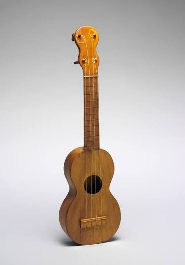
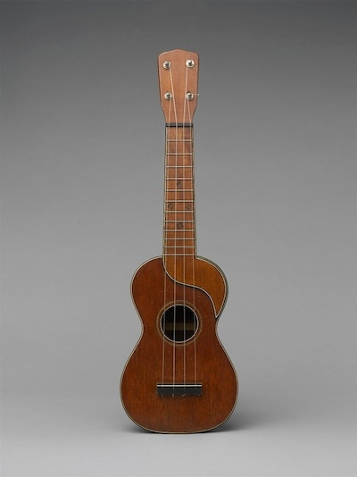

Photos of Ukuleles
Ukuleles come in many different shapes and sizes. The most commonly used ukuleles are the tenor and base ukuleles.


Ukuleles come in many different shapes and sizes. The most commonly used ukuleles are the tenor and base ukuleles.

